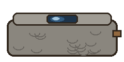

Overview
RimWorld has always skipped the third pillar of frontier life. Homesteads grow food and burn fuel — Wellspring adds the water. Draw it, store it, and trench it into your fields for richer soil. Pairs naturally with Homesteader (water your orchard) and Stormproof, but requires neither.
Buildings & terrain
The full water cycle: draw it, catch it, store it, spend it.

Hand-dug well
A stone-lined well with a wooden windlass. Colonists draw 5 water per bill of honest labor — slow, reliable, and it works anywhere with ground under it.
Rain barrel
Slowly collects rainwater and dew — 4 water every day or two, no labor required. Every roofline should have one.

Cistern
A covered stone tank that stockpiles water where the buckets can't spill and the sun can't reach it. Contents never deteriorate.
Irrigated soil
Trench drawn water into cropland to work it into rich, dark growing soil. Only lays over ground that could already grow crops — you can't water a stone floor into a farm.
Research
Two neolithic projects — tribes dig ditches too.
├─ Hand-dug well
├─ Rain barrel
└─ Cistern
Wellcraft
└─ Irrigation (900 pts, Neolithic) → irrigated soil
Roadmap
Powered pump & sprinkler
Industrial-tier water at scale — and something new for your Stormproof-hardened grid to protect.
Drought & flash flood
Weather events that make water infrastructure matter: crops wither without irrigation, storms overflow the ditches.
Drinking troughs
Watered animals are happy animals.
Installation
- Download with the button above and extract the
Wellspringfolder into your RimWorldModsdirectory. - Enable Wellspring in the mod list and restart the game.